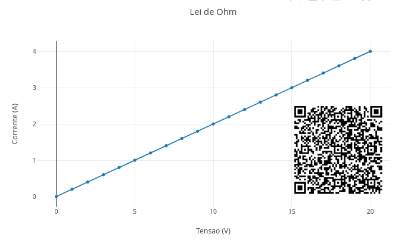
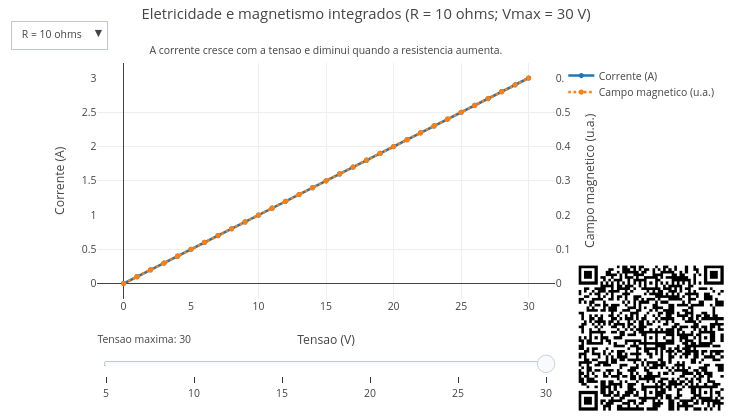
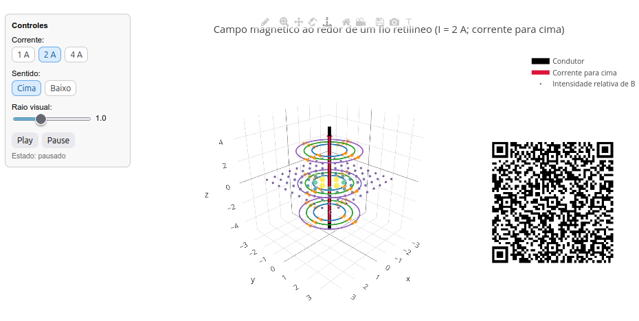

3 Eletricidade e Magnetismo
A eletricidade está presente em praticamente todas as atividades humanas. Ela alimenta lâmpadas, celulares, computadores, eletrodomésticos, sistemas de comunicação e redes inteiras de transmissão de energia. Já o magnetismo aparece em motores, transformadores, alto-falantes, cartões magnéticos e em muitos dispositivos que usamos sem perceber. E é claro, um (quase) não vive sem o outro.
Mas o que realmente acontece quando ligamos um aparelho ? Como as cargas elétricas se movimentam em um circuito ? E por que um fenômeno aparentemente elétrico pode dar origem a efeitos magnéticos ? Isso pode nos levar a uma unificação curiosa da Física, a ideia de que eletricidade e magnetismo não são temas isolados, mas “duas faces de uma mesma moeda”.
Como algo invisível pode empurrar, puxar e mover objetos sem encostar neles ?
Depois de explorar, você consegue:
- compreender a relação entre tensão, corrente elétrica e resistência;
- interpretar graficamente situações simples de circuitos elétricos;
- reconhecer como correntes elétricas produzem campos magnéticos e como isso se conecta a tecnologias do cotidiano.
- relacionar tensão, corrente elétrica e resistência em situações simples;
- interpretar representações gráficas e espaciais de fenômenos eletromagnéticos;
- reconhecer aplicações da eletricidade e do magnetismo em tecnologias do cotidiano.
- interpretar fenômenos de eletricidade e magnetismo com auxílio de simuladores interativos.
Antes de mergulhar nas explicações formais, experimente o JSPlotly abaixo, alterando os valores no código para observar os efeitos produzidos no gráfico.

Agite antes de usar
O script mostra a relação entre tensão elétrica (ou potencial elétrico, V), corrente elétrica (I) e resistência (R). Para isso ele usa a 1a. lei de Ohm:
\[ V = R \cdot I \tag{3.1}\]
ou, reorganizando:
\[ I = \frac{V}{R} \tag{3.2}\]
Onde: V é dado em Volts (V), I em Àmpere (A), e R em ohm (\(\Omega\)).
Veja pelas Equação 3.1 e Equação 3.2 que o comportamento é puramente linear, e dependente da resistência definida no código. Ex:
const R = 7;Observe que a corrente aumenta quando a tensão também aumenta. Isso acontece porque a resistência permanece constante. Parece até meio óbvio, mas essa é a alma de um circuito elétrico resistivo. E que pode aparecer desde um simples LED de celular até uma biocélula a combustível ! Ou seja, a Lei de Ohm mostra que, em um resistor ôhmico:
\[ I \propto V \]
Isso significa que tensão e corrente são diretamente proporcionais. A inclinação da reta informa como a corrente responde à tensão. Quanto maior a resistência, menor a inclinação. Quanto menor a resistência, maior a inclinação. Assim, se a tensão dobra, a corrente também dobra. Experimente comparar situações com baixa e alta resistência, e tente prever o resultado antes de alterar o código. Em qual situação a corrente cresce mais “lentamente” ?
E compare também o que você experimentou acima com uma cena do cotidiano. Imagine uma lâmpada, um chuveiro ou um carregador. Todos dependem da relação entre tensão, corrente, e resistência. Agora, se a corrente for do tipo que “sai” da tomada de casa, bom, aí a coisa muda de figura, pois entra em ação o magnetismo. E muda de figura também a pergunta central desse capítulo:
Como descrever, prever e visualizar a relação entre tensão, corrente elétrica, resistência e efeitos magnéticos em situações simples do cotidiano ?
Em outras palavras, queremos entender como uma diferença de potencial elétrico (tensão) pode colocar cargas em movimento (corrente), como esse movimento encontra oposição no circuito (resistência) e como, a partir daí, surgem efeitos magnéticos observáveis.
Agora saímos da observação inicial e voltamos ao mundo real com mais uma ferramenta para interpretação: um simulador JSPlotly mais completo.

No simulador você poderá explorar a relação entre tensão, corrente e resistência, a variação da intensidade da corrente em diferentes condições, a associação entre corrente elétrica e campo magnético, e a leitura integrada de mais de uma dessas grandezas ao mesmo tempo.
Agite antes de usar
O script apresenta uma curva de corrente, uma curva de campo magnético relativo, um menu suspenso (dropdown) para resistência e um controle deslizante (slider) de tensão máxima. O menu permite escolher o valor para resistência (2, 5, ou 10 ohms), enquanto o slider um valor máximo para tensão (5 a 30 V). Quando você muda isso, a corrente muda e a curva do campo magnético muda junto.
- Iniciando o aplicativo. Inicie com R = 5 ohms e Vmax = 10 V.
- O que acontece com a corrente quando a tensão cresce ?
- O gráfico parece linear ?
- Por que a curva do campo acompanha a da corrente ?
- Mexendo na resistência. Troque no menu de R = 5 para R = 10.
- Para a mesma tensão, a corrente aumentou ou diminuiu ?
- O campo magnético ficou mais intenso ou menos intenso ?
- O que isso sugere sobre a relação entre resistência e fluxo de cargas ?
- Mexendo no slider. Agora arraste o slider para Vmax = 20, e depois Vmax = 30.
- O que mudou no alcance do gráfico ?
- A forma da curva mudou ou foi apenas sua extensão ?
- O modelo continua obedecendo à mesma relação física ?
Você deve ter percebido que o campo magnético é proporcional à corrente. No modelo simplificado do script, o campo magnético \(B\) é dado por:
\[ B = k \cdot I \]
Onde: k = 0.2.
Substituindo I = \(\frac{V}{R}\) em “\(B = kI\)”” :
\[ B = k \cdot \frac{V}{R} \]
Essa é a ponte para se compreender como funciona um eletroimã (fio retilíneo com corrente gerando campo magnético em torno de um condutor). Muitos objetos do cotidiano seguem essas mesmas relações matemáticas, como as redes elétricas. Nessas, corrente e resistência precisam ser equilibradas para transmissão eficiente por motores elétricos, os quais convertem energia elétrica em movimento com base em interações eletromagnéticas de transformadores. Por sua vez, os transformadores operam pela íntima relação entre correntes e campos magnéticos variáveis para fazer funcionar os dispositivos eletrônicos, os quais dependem de controle preciso do fluxo de cargas.
Agora tente responder às questões que seguem, mexendo no aplicativo:
- Se a resistência de um circuito aumenta muito, o que acontece com a corrente elétrica para uma mesma tensão (experimente mudar R de 2 pra 10 ohms) ?
- Como isso aparece no gráfico ?
- Se a corrente diminui, o campo magnético relativo aumenta ou diminui ?
- Ao aumentar a tensão máxima no slider, a relação física muda ou apenas vemos mais pontos do mesmo comportamento ?
- Por que a curva de corrente é linear neste modelo ?
Resumindo, tensão, corrente, resistência e campo magnético guardam relações importantes que se expressam no cotidiano. Tensão elétrica está relacionada à “força de empurrão” sobre as cargas, enquanto que resistência representa a oposição à passagem da corrente. Por sua vez, correntes elétricas produzem campos magnéticos ao seu redor. E a integração dessas ideias permite compreender como operam dispositivos reais.
Refletindo mais um pouco sobre as relações acima, é possível divagar para “outros mundos” da eletricidade e magnetismo. Por exemplo:
- E se a resistência for nula ? Experimente “R = 1e-20” no app da Figura 3.2.
- E se não houver passagem de corrente, qual seria o valor da resistência ?
- E se aumentarmos a tensão máxima mantendo a resistência fixa ? Use o app da Figura 3.3 para auxiliá-lo.
- E se aumentarmos a resistência mantendo a mesma tensão ?
- E se a resistência for pequena: por que a corrente cresce mais rapidamente ?
- E se duas situações tiverem a mesma tensão, mas resistências diferentes ?
- E se quisermos gerar um campo magnético maior: devemos aumentar a tensão ou reduzir a resistência ?
- E se a corrente fosse zero; ainda existiria campo magnético ?
- E se aumentarmos muito a corrente; o campo cresce indefinidamente ?
- E se nos afastarmos muito do fio; o campo desaparece completamente ?
- E se invertermos o sentido várias vezes; o campo acompanha instantaneamente ?
- E se existirem dois fios próximos; como os campos interagem ?
- E se o fio não for retilíneo; as linhas de campo continuam circulares ?
- E se o campo fosse representado por vetores em vez de círculos ?
- E se aproximarmos uma bússola do fio; O que aconteceria ?
3.1 Observando o campo magnético no espaço
Nos gráficos anteriores, a relação entre tensão, corrente e resistência foi observada principalmente em duas dimensões. Agora, podemos avançar para uma representação espacial do campo magnético em torno de um fio retilíneo percorrido por corrente, como segue.

Nessa visualização, o fio condutor aparece no centro, enquanto curvas ao seu redor sugerem as linhas do campo magnético. Ao variar a corrente, a representação da intensidade do campo também se altera.
Agite antes de usar
O app apresenta-se com:
- Um fio retilíneo no centro;
- Setas tangenciais ao redor do fio mostrando o sentido local do campo magnético;
- Várias circunferências ao redor do fio representando as linhas de campo;
- Uma seta vermelha indicando o sentido da corrente;
- Pontos no plano indicando a ideia de que a intensidade do campo depende da distância ao fio.
Esse objeto interativo mostra como uma corrente elétrica em um fio gera um campo magnético ao seu redor. Esse campo que forma círculos ao redor do fio depende da corrente e da distância ao fio. Matematicamente, e de forma simplificada:
\[ B \propto \frac{I}{r} \]
Assim, experimente o app com as sugestões que seguem:
- Use o painel lateral para selecionar a corrente (1, 2 ou 4 A). Observe como muda a intensidade das linhas;
- Ative o movimento do campo com
Play/Pause, e observe o sentido de circulação da corrente; - Altere o sentido das linhas de campo para cima ou para para baixo, e observe que o campo inverte o sentido da corrente;
- O raio visual controla a posição das linhas de campo. Observe que o campo existe em todo o espaço, mas enfraquece com a distância;
3.2 Regra da mão direita
Essa é uma convenção física para facilitar a compreensão de como o sentido da corrente e do campo magnético estão interligados. Nessa representação, o polegar aponta para o sentido da corrente, enquanto os dedos com a mão fechada apontam para o sentido do campo. Isso aparece visualmente no app da Figura 3.4.
Alguns cenários permitem explorar o aplicativo. Veja:
Intensidade do campo. Aumente a corrente e veja como o campo fica mais intenso.
Inversão do campo. Mude o sentido da corrente e observe o campo gira ao contrário.
Distância ao fio. Observe os pontos do plano, e perceba que o campo diminui com a distância.
Estrutura tridimensional. Olhe o gráfico de diferentes ângulos, clicando no menu de barras superior para ícones de rotação e translação. Observe então a tridimensionalidade do campo magnético.
A mesma lógica estudada aqui reaparece em muitos outros contextos, e até mesmo introduz as ideias de eletromagnetismo. Veja um chuveiro elétrico, por exemplo, em que a resistência influencia diretamente o aquecimento. Como também em carregadores e fontes, que controlam tensão e corrente para alimentar dispositivos, como o seu celular. Na estrutura dos eletroímãs, em que a passagem de corrente gera campo magnético utilizável. Em motores e ventiladores, cujo funcionamento depende da interação entre corrente e magnetismo. Em alto-falantes, que convertem sinais elétricos em vibração mecânica com base em forças magnéticas. E em muitas outras situações do cotidiano.
Os modelos desse capítulo utilizam relações fundamentais da Física, especialmente:
- a 1a. Lei de Ohm, que relaciona tensão, corrente e resistência;
- a ideia de que uma corrente elétrica gera campo magnético ao redor de um condutor;
- relações de proporcionalidade que podem ser representadas numericamente e visualizadas graficamente.
Do ponto de vista computacional, o código cria sequências de valores, aplica uma relação matemática a cada elemento e devolve essas informações na forma de gráficos interativos. Assim, você pode manipular parâmetros e perceber como pequenas mudanças numéricas produzem efeitos físicos visíveis.
Agora uma síntese da lógica utilizada para o script da Figura 3.2.
A resistência é definida aqui:
const R = 7;Os valores de tensão são gerados de 0 até 30 volts:
for (let V = 0; V <= 30; V += 1)Para cada valor de tensão, o script calcula a corrente:
I_values.push(V / R);Depois, o gráfico é construído com:
x: V_values,
y: I_values